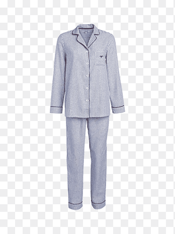

This is Default!
The color of the images are as follows:
Default: #382c52

This webpage was created using HTML, CSS, JS, and jQuery. It changes to the desired season page by clicking on the links above or by inputting a date above. This is the default webpage. Here you'll see the default style, which is sleep wear. Sleep wear could be anything, but the most basic sleep wear will be the pajamas which is shown here. Hope you enjoy exploring my webpage!